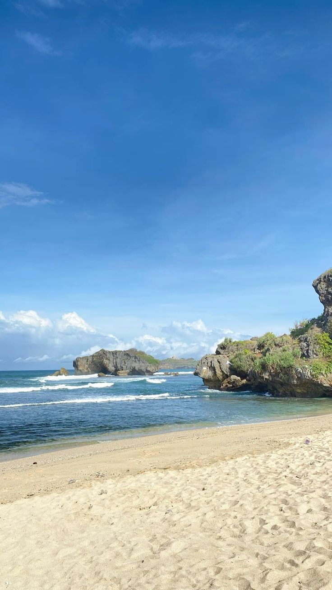

Beranda | Tentang Saya | Portofolio | Kontak
Saya saat ini berkuliah di Politeknik Balekambang Jepara.
Saya mengambil Program Studi Rekayasa Perangkat Lunak karena ingin belajar dunia pemrograman.

Ini adalah foto kegiatan saya di kampus dan di luar perkuliahan.
Meskipun tidak memiliki hobi khusus, saya menikmati waktu luang saya dengan bersantai dan belajar hal baru.
Berikut adalah beberapa website yang sering saya buka untuk belajar: